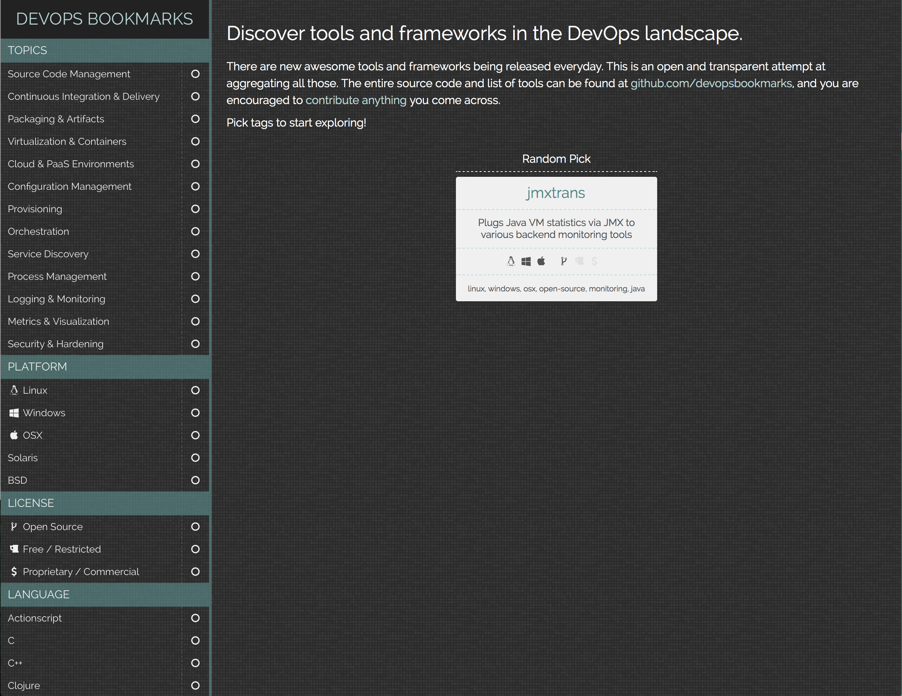
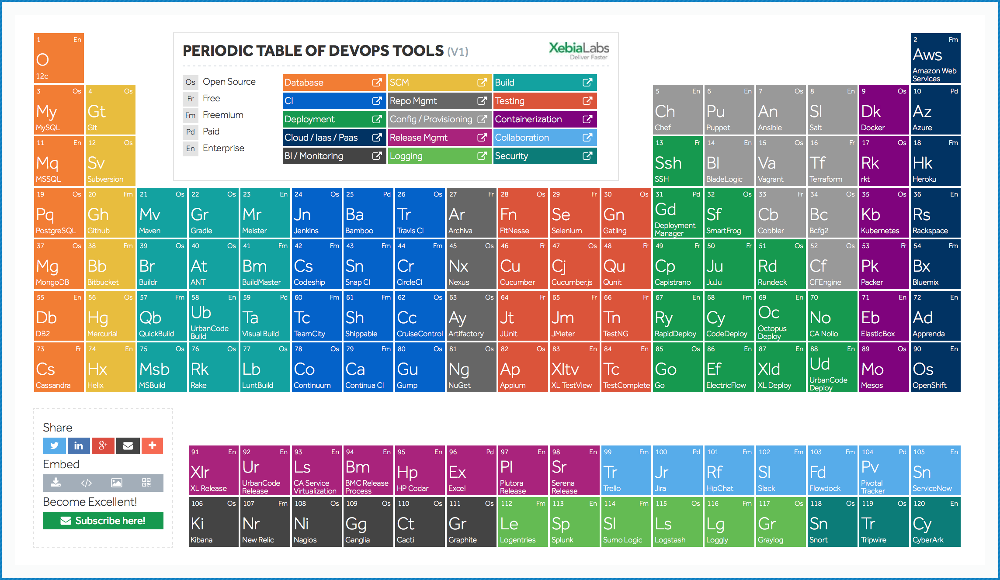

Some CI Server Tools
- Open Source
- As a Service
- Commercial Tools
- With Free Options for Small Teams
- Others
- Release Management and Build Acceleration Systems
- UrbanCode's AntHillPro
- EletricCloud's Eletric Commander
- IBM BuildForge
DevOps

DevOps Bookmarks

Periodic Table of DevOps Tools
Delivery
Resilience
Jenkins
Testing
Other Tools
- Docker
- Packer is a tool for creating machine and container images for multiple platforms from a single source configuration.
- Run-Deck - Job Scheduler and Runbook Automation
- JFrog - Universal Artifact Repository Manager